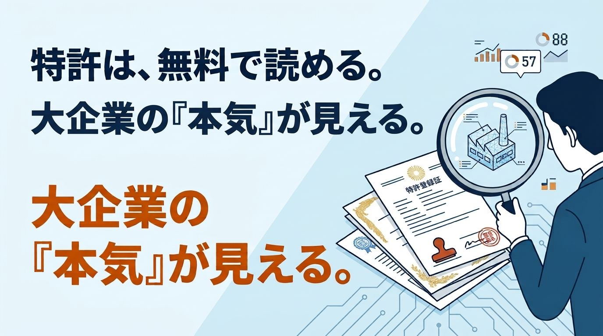

デジタルツインに関する特許を調べてみました。きっかけは、自分がやろうとしていることを、すでに誰かが特許にしていないかが気になったからです。ただ調べていくうちに、大企業の動向まで見えてきました。特許は、企業が「ここに投資する」と決めた結果です。しかも出願から一定期間が過ぎると公開されます。大企業が今どこを狙っているのかを、無料で覗ける資料でもあるわけです。
調べ方と、出願人の顔ぶれ
特許情報プラットフォーム（J-PlatPat）で「デジタルツイン」を検索すると、国内文献だけで1,789件、海外文献も425件がヒットしました。これは公開公報や登録公報などを含む文献数で、特許そのものの件数ではありませんが、それでも想像以上の多さでした。
さすがに全部は読めないので、気になった16件をピックアップして読みました。うち13件が出願公開の段階、3件が登録済みです。出願人・権利者を見ると、名だたる大企業がずらりと並んでいます。ソフトバンクグループが9件、富士通が2件、トクヤマ・台湾の企業・アイディオット・nanoFACTORY・三菱電機が各1件でした。自分が気になったものを選んだので偏りはありますが、半数以上がソフトバンクという結果は意外でした。
気になって「デジタルツイン」と「ソフトバンク」で絞り込んで検索すると、文献の数は88件。さらに驚いたのは、そのうち57件が2026年に公開されていたことです。ここ一年で一気に出願が表に出てきたことになります。デジタルツインというと製造業の技術という印象がありましたが、実際に出願が多いのは通信・IT系の企業でした。
ソフトバンクは、領域を広く押さえている
ソフトバンクの9件は、扱う領域がとにかく幅広い印象でした。ライフログ、デジタルヒューマン、店舗、製造ライン、外観検査。デジタルツインという技術を、特定の業種に絞らずに展開しています。中でも製造業に近い3件が気になりました。
- 店舗をLiDAR搭載のスマートフォンでスキャンして3Dマップを作り、在庫データと合わせてデジタルツイン化。商品配置を最適化し、ロボットで陳列する
- 製造ラインのIoTセンサのデータを解析し、最適な製造方法を提案して工程を制御。デジタルツインで故障も予測する
- 製品画像から3Dモデルを作ってデジタルツインに送り、良否判定・不良原因の推定・解決策の提案まで行う
私がこれまで書いてきた「iPhoneのLiDARで現場をスキャンする」「振動データで予知保全」と、キーワードだけを見れば重なります。読んでいてドキッとしました。
製造業の企業は、課題が具体的
一方、製造業系の出願は、狙いが違いました。山口県のトクヤマ（周南市）は、化学プラントで水素を圧縮する往復動式圧縮機の状態監視に関する出願をしていました。デジタルツイン上で仮想部品の振動データを作り、それで学習させたモデルで、実機の振動から部品の摩耗や損傷を推定する内容です。設備を止めずに、中の状態を知りたい。保全をしていた身には、共感しかありませんでした。
富士通は、2D映像と3D設計データを重ねてデジタルツインの位置合わせを自動化するもの、人の移動をシミュレーションして施策を検証するものでした。図面と現物のズレに苦労した経験があるので、前者も他人事ではありません。
IT系が「デジタルツインで何ができるか」を広く押さえにいくのに対し、製造業系は「この設備のこの課題」に特化している。同じデジタルツインという言葉でも、狙っているものはまったく違う。そう感じました。
中小製造業はどこを狙えるのか
16件を読んで感じたのは、大企業は汎用的な仕組み、いわば大きな枠を押さえにいっているということです。「店舗をスキャンして最適化する」「製造ラインのデータを解析して制御する」。どれも広く使える形で書かれています。こう書くと、中小企業は何もできないのでは、と聞こえるかもしれません。ですが、そうではないとも思います。
ここで参考になるのが、トクヤマの出願です。往復動式圧縮機の状態監視という、対象がはっきり絞られた内容でした。あらゆる設備ではなく、この設備のこの課題。デジタルツインを使って、その一点に焦点を当てています。広く押さえるのではなく、深く掘る。この方向であれば、中小製造業にも十分に道があるのではないでしょうか。
実際、現場に固有の課題というのは、外から見ているだけでは出てきません。図面が残っていない設備がある。メーカーがもう存在しない。リレー制御で、どう動いているか誰も把握していない。同じ型式でも、工場ごとに改造されていて中身が違う。こうした「その現場だけの事情」を知っているのは、現場にいる人たちだけです。
おわりに
特許を調べる目的は、怖がることではなく、自分の立ち位置を知ることだと思います。公開公報は出願の段階であって、権利になっているとは限りません。判断に迷うときは、弁理士や知財の支援窓口に相談するのが確実です。
大企業が広い領域に出願している一方で、現場の細かな課題は、現場を知る人にしか書けない。そう感じました。私は現場に近い立場から、中小製造業に合った形でデジタルツインを届けていくんだと、改めて確信しました。
※筆者は弁理士ではありません。現場の人間が公開情報を読んだ個人的な感想であり、法的な判断ではありません。特許の権利範囲や有効性については、必ず弁理士等の専門家にご確認ください。